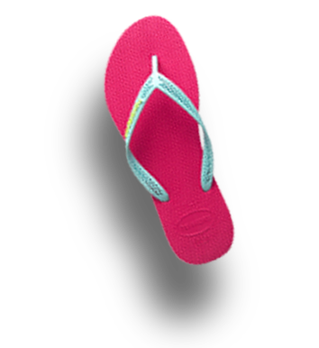
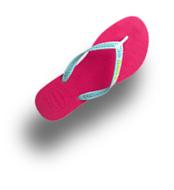

Правила посещения бассейна St.Tropez
Окруженный шезлонгами, пальмами и пляжными зонтиками — бассейн с нежной лазурной водой приковывает внимание всех посетителей. Вокруг бассейна на лежаках можно погреться на солнышке, а немного дальше, в тени, можно устроиться в беседке. Бассейн работает 7 дней в неделю.
Правила и стоимость посещения:
- Каждому посетителю бассейна предоставляется в пользование полотенце, комфортная раздевалка и лежак рядом с бассейном.
- В будние дни с 05.00 до 12.00 стоимость посещения 500 рублей без депозита. С 12.00 и до закрытия — 1 000 рублей, 500 рублей — депозит в ресторане.
- В выходные с 05.00 до 12.00 стоимость посещения 500 рублей и 500 депозит в ресторане. С 12.00 и до закрытия бассейна — 1 000 рублей, 1 000 рублей — депозит.
- Дети до 5 лет — бесплатно.
